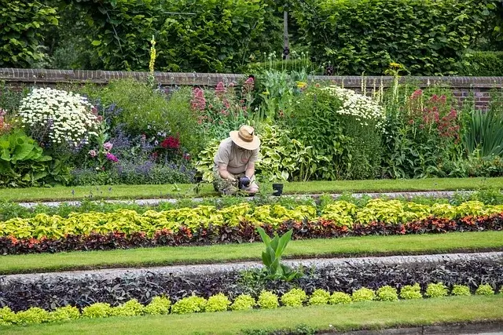

Tus jardines en nuestras manos
Cuidado y mantenimiento de jardines
Bienvenido a nuestro sitio web dedicado a la jardinería profesional. Aquí descubrirás todo sobre la labor de un jardinero y las múltiples ventajas de contratar nuestros servicios.
¿Qué hace un jardinero?
Un jardinero es un experto en el cuidado y mantenimiento de espacios verdes. Su labor incluye:
- Diseño de Jardines: Creación de paisajes estéticamente agradables y funcionales, adaptados a las necesidades del cliente.
- Mantenimiento de Plantas: Cuidado de flores, arbustos y árboles, asegurando su salud y crecimiento óptimo.
- Corte de Césped: Mantenimiento regular del césped para que luzca siempre verde y salud
- Control de Plagas: Identificación y tratamiento de plagas y enfermedades que pueden afectar a las plantas.
- Instalación de Sistemas de Riego: Implementación de soluciones eficientes para el riego de jardines y plantas.
Ventajas de contratar un jardinero
- Experiencia y Conocimiento: Los jardineros profesionales tienen la formación y experiencia necesarias para cuidar adecuadamente de tus plantas.
- Ahorro de Tiempo: Delegar el mantenimiento de tu jardín te permite disfrutar de tu tiempo libre sin preocupaciones.
- Mejor Estética: Un jardinero puede transformar tu espacio exterior, aumentando su belleza y valor.
- Salud de las Plantas: n cuidado adecuado asegura que tus plantas crezcan sanas y fuertes, lo que prolonga su vida.
- Soluciones Personalizadas: Soluciones Personalizadas:
¿Quiénes Somos?
Somos una empresa de jardinería ubicada en la Comunidad de Madrid.
Realizamos todo tipo de trabajos de jardinería y mantenimiento integral para viviendas particulares, empresas, urbanizaciones, constructoras y promotoras.
